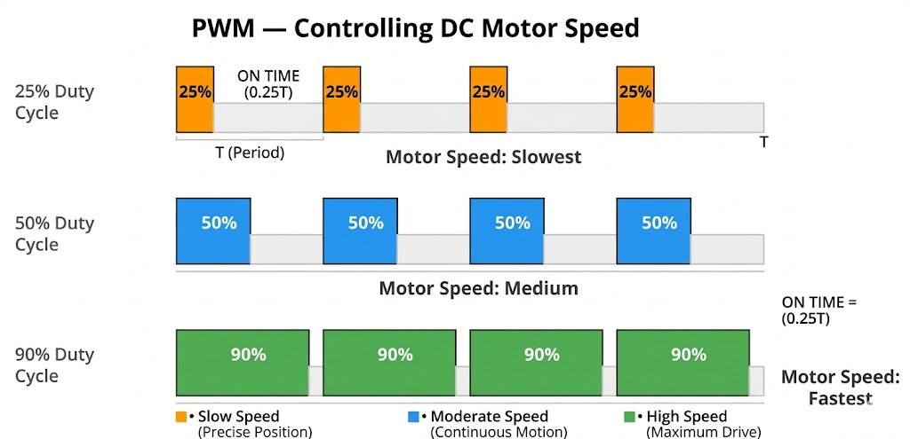

Module 04 — Actuators
Motors, PWM and Drivers
04
▾
PWM and Motor Drivers
Translating PID output into physical wheel movement
MCU GPIO pins output only 3.3–5 V at ~40 mA — too weak to drive a motor. A motor driver (L298N) amplifies this. Speed is controlled via PWM: rapidly switching ON and OFF; the duty cycle (ON ratio) sets average power to the motor.
Figure 4.1 — PWM Duty Cycles

Figure 4.2 — Motor Type Comparison

DC motors are the standard choice for self-balancing bots. The
L298N driver accepts two direction pins (IN1, IN2) and one PWM speed pin (ENA), enabling full forward,
reverse and brake control from the microcontroller.
Live Calculator — PWM to Motor Speed
PWM Output Converter
Drag the slider to see duty cycle, voltage and estimated speed in real time
150
Direction—
Duty cycle—
Effective voltage—
Estimated motor speed—
IN1 IN2 ENA—
Code — Motor Driver (Arduino)
const int ENA=9, IN1=7, IN2=8; void motor(int pwm) { int spd=constrain(abs(pwm),0,255); if(pwm>0){digitalWrite(IN1,HIGH);digitalWrite(IN2,LOW);} else if(pwm<0){digitalWrite(IN1,LOW);digitalWrite(IN2,HIGH);} else{digitalWrite(IN1,LOW);digitalWrite(IN2,LOW);} analogWrite(ENA,spd); } void loop(){motor((int)pid.compute(0.0,getAngle()));delay(5);}
Test Cases
Motor Control Validation
P
PWM = +150: forward at 58.8% duty
IN1=HIGH, IN2=LOW, ENA=150 → 150/255 = 58.8%
Motor spins forward at approximately 59% speed
P
PWM = 300: must clamp to 255
constrain(300, 0, 255) = 255
Motor protected from over-voltage. Output limited to 255.
P
PWM = 0: motor brakes, not free-spin
IN1=LOW, IN2=LOW → L298N brake mode
Clean stop rather than coasting. Correct behavior.